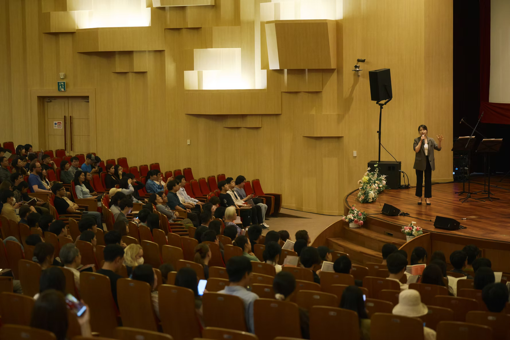
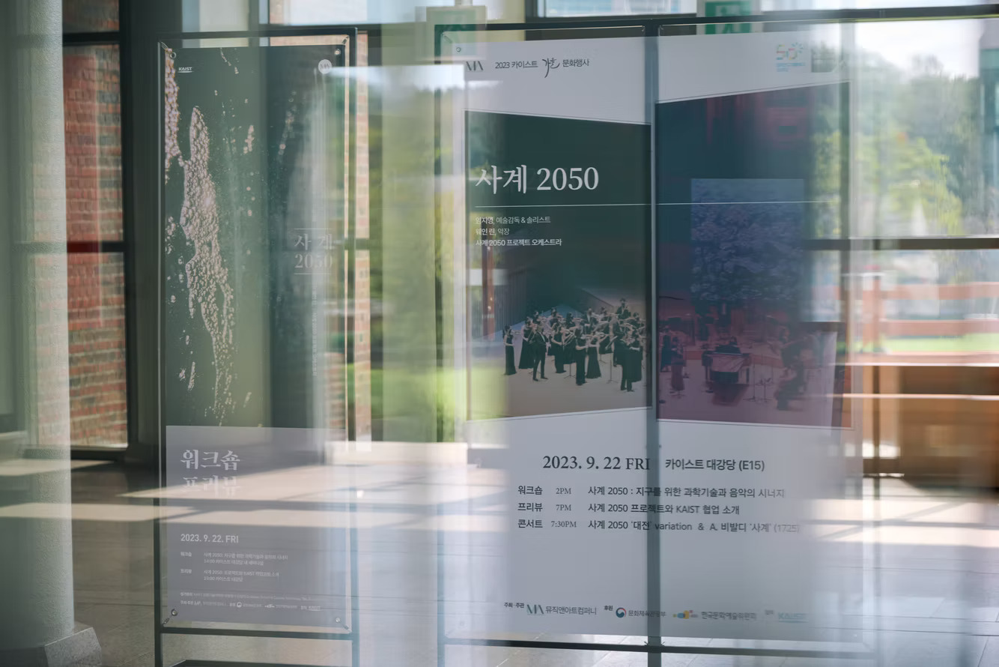

for more detailed info (kor): https://www.fourseasons2050.info/
Four Seasons 2050 is a collaborative project that integrates music, climate science, and artificial intelligence, started by AKQA. It reimagines Antonio Vivaldi’s The Four Seasons by applying climate change data projected for the year 2050, offering a musical interpretation of our future environment to raise awareness of the climate crisis.
This climate change forecast, expressed through music, is based on the RCP 8.5 scenario. It transforms climate data from various regions around the world into a reinterpretation of Vivaldi’s original work, portraying the altered four seasons of the future.
By listening to Four Seasons 2050, audiences encounter an unfamiliar, bleak, and at times unsettling soundscape—an artistic warning that invites deep reflection on the dangers of unchecked climate change.


I led the overall creative direction of Four Seasons 2050 – Daejeon, overseeing the data-driven composition and arrangement process. This included mapping climate projection data to musical parameters, generating materials using AI models such as ChatGPT and MusicGen, and shaping them into a cohesive musical structure.
1. Data Collection & Climate Analysis
Four Seasons 2050 – Daejeon began with a question: how would the vivid scenes depicted in Vivaldi’s The Four Seasons change in the face of accelerating climate change?
To answer this, the team studied future climate projections based on the RCP 8.5 and SSP5-8.5 scenarios, analyzing changes in temperature, precipitation, heatwaves, cold spells, season lengths, biodiversity, crop yields, pest activity, and urban discomfort indices. Regional climate data from both Seoul and Daejeon were collected to highlight the specific environmental shifts expected by 2050.
While Vivaldi’s original sonnets celebrate the harmony of nature and human life, our findings painted a different picture: spring grows quieter as biodiversity declines, summer and winter become more extreme and dangerous, and autumn loses its sense of abundance. Four Seasons 2050 captures these unsettling transformations.
2. Algorithmic Mapping & AI Collaboration
This project is rooted in human-AI collaboration. Climate data for Daejeon and Korea was mapped onto musical parameters such as pitch, tempo, and articulation. To reflect the escalating instability of the climate, the team repeatedly tuned the hyperparameters to effectively translate these projections into musical changes.
For creative inspiration, the original sonnets were reimagined using ChatGPT-4, and then fed as prompts into MusicGen—a state-of-the-art text-to-music model—to generate musical materials. These were carefully analyzed and integrated by the music team into new compositions.
The regenerated sonnets also served as input for the Deforum Stable Diffusion model, producing video sketches of future Daejeon landscapes. These AI-generated visuals were used as stage backdrops, enhancing immersion and delivering the message of climate urgency.
3. AI-Based Composition & Arrangement
The music team reconstructed AI-generated MIDI into structured scores. Melodic lines were refined with techniques from Vivaldi’s original score (e.g., mordents, trills), and musical textures were reworked through added percussion, altered solo violin lines, and motif repetitions.
Five AI-generated audio tracks—based on the reimagined sonnets—were layered within the second movement of autumn, blending electronic and acoustic sounds to portray the chaos of climate disruption.
Through these musical choices, Four Seasons 2050 – Daejeon expresses the emotional turbulence of our climate future, while maintaining a structured musical narrative. By adding, removing, or repeating elements, the team emphasized climate-specific data-driven features within the sonic landscape.